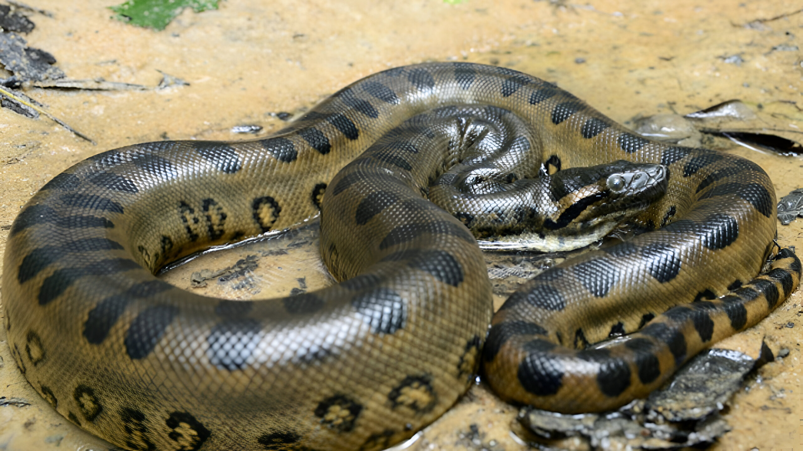
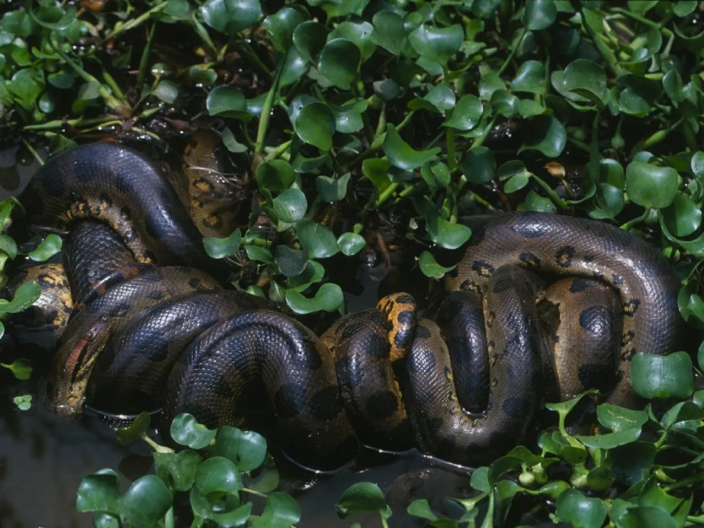

Sucuri
Eunectes murinus

A sucuri é uma das maiores cobras do mundo, com até 9 metros de comprimento, e vive em áreas alagadas da América do Sul. É semi-aquática, alimenta-se de grandes mamíferos e répteis, e mata suas presas por constrição
Habitat
Habita regiões pantanosas, rios e áreas alagadas da América do Sul, com maior presença na Amazônia e Pantanal. Passa muito tempo na água, onde se sente mais à vontade.
Reprodução
A sucuri é ovovivípara, ou seja, os ovos se desenvolvem dentro do corpo da fêmea, e os filhotes nascem vivos. As ninhadas podem ter até 80 filhotes.
Peso
Seu corpo é robusto e musculoso, pesando até 250 kg.
Comprimento
É uma das maiores serpentes do mundo, podendo ultrapassar 9 metros de comprimento.

Curiosidade
A sucuri não é venenosa. Ela mata suas presas por constrição, enrolando-se ao redor delas e apertando até sufocá-las antes de engolir.

Os texto inspirados são dos sites
Toda Matéria, Mundo ecologia e Portal Amazônia.